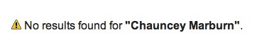
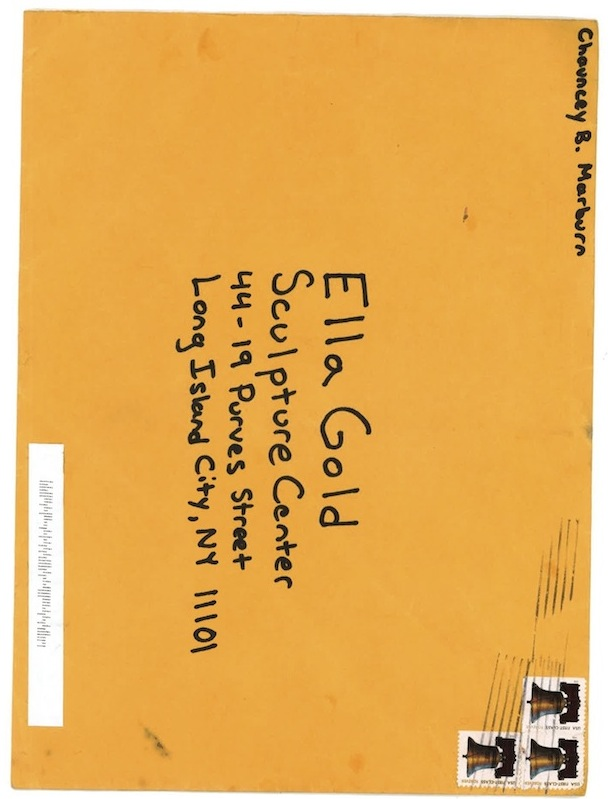

Chauncey Marburn
Enter the Grundel

Chauncey Marburn chauncey.marburn@gmail.com Mon, Nov 5, 2012 at 5:22 PM
To: letters@psychianamagazine.org, arts@psychianamagazine.org
Dear Psychiana,
To whom it may concern,
Attached you will find my submission for your periodical (Magazine? Publication? Quar- terly? What do you prefer? People get so touchy about this labeling and I don’t want to offend. Not until I’m published at least. That was a joke :). Jesus Christ.)
Anyway, as you may have noticed if you looked at the ‘To:’ heading on this email I have sent this email to both the Visual Submissions and the Written Submissions department’s email addresses because I could not decide in which camp to camp. Touchy about the labeling again. But it’s just that my submission is written but written in a visual manner with a font that I spent quite some time designing and of which I am very proud and which, I believe, completely transforms the meaning of the attached short story epic poem (NOTto be confused with an epyllion). I hope that unlike some other periodicals, magazines, and publications that I will not name that Psychiana will have the foresight to see that the short story epic poem is not some literary ‘fad’ playing off the so called ‘dead’ form of epic poetry. Because it’s not. And who gets to decide that epic poetry is dead in the first place? The poet laureate? So yes, I have already had the privilege of submitting certain content to Bomb, Explosion Proof, Rocket Propelled Grenade (formerly Full Meddle Jacket), and other periodicals, magazines, etc that have names that would lead you to believe their content is titillating and ‘edgy’ but is in fact stuffy and ‘apres garde.’ As professional cour- tesy, please don’t pass that last part on to your peers. Not that I fear them.
In order to suit the formats each department was expecting, I have attached the work as both a pdf and png. Also, in the event that it needs editing I can send either a text file (.txt) transcription of the text or a Photoshop Document document (.psd) of the images. On the subject of editing, you will notice that both documents are photographs of text in which the text has been stamped onto the page by hand (normally I would use my press but I don’t have one yet), so if you absolutely must give me notes keep in mind that I will have to re- stamp the whole page.
Also attached you will find an invoice for my content, should you choose to use it; I believe it is very reasonable. I would like to draw your attention to the clause in which I mention that I will, in lieu of payment, accept advertising space for my Etsy.com store. Please note that the acceptable advertisement size will depend on whether or not it is in color. Your publication allows for tasteful male nudity?
Best Regards,
Chauncey B. Marburn
P.S. While I assume the average reader is fluent in both, if either the Old English or the AAVE (African American Vernacular English) in the piece distract I would be willing to append an Old English/AAVE glossary to the back of my work but keep in mind that this would add considerably to the length of the piece especially as I would insist that the glos- sary definitions be in the same metre and typeface as the piece so as not to distract the reader any more than necessary.
Dear Chauncey,
We’d love to read your submission, but your email was sent without any attachments. Would you send again?
Thanks, Letters Editors
Letters Editor(s),
Hmm... my gmail.com is saying that it was sent. Maybe it was too big of a file for your email box? The new ones attached to this email are much smaller; they were taken with my cell phone. Also, what internet program are you using? Is it compatible with Netscape Navigator 9.0? (I know it’s old, but I don’t want to loose my cookies)
Sorry for the mix-up, -Chauncey
Dear Chauncey,
Oh no! We still haven’t received any files from you, even with your last email. Can you try again?
Best,
The Letters Editors
Geez, Really?
Are you getting document attachments from other email documents? Gmail.com is say- ing that it sent both attachments (see attached screenshot of my gmail.com, that’s what it says, right?). What about the people in the Visual Submissions Department, have they had better luck? What is your fax machine number?
Embarrassed,
-Chauncey
Letters Editor(s),
Have you received any of the documents that I have attempted to send you? I’m just checking in; I’m sure that you are very busy; I don’t want you to think that I’m being pushy; that is not my intention. I feel that waiting two days to re-contact you is an appropriate amount of time--not that your lack of contact over this two day period is somehow inap- propriate. I’m not concerned or nervous or offended and this is really just a formality andI would not be writing this unless I cared deeply about contributing my content to your magazine/publication/periodical etc.
Awaiting your response with the appropriate amount of eagerness given the current situa- tion,
-Chauncey
Dear Chauncey,
We still haven’t received any files from you. Perhpas Gmail isn’t the proper platform to get them to us; try a dropbox?
We’re curious,
The Letters Editors
Wonderful. Where are you located?
Dear Chauncey,
Firstly, apologies for our delay in response. dropbox.com
Letters Editor(s),
https://www.dropbox.com/s/6fv8nilpq2l1d4y/Inf%C3%A6reld_S%C3%A9_Grundel_ %28EnterTheGrundel%2910052012V20.1Part1A1S3GoodVersionForDropBox
Thank You for Your Patience,
-Chauncey
Chauncey,
Secondly, we meant via dropbox.com, where you can upload your files and then share them with us. It’s free, so don’t worry.
Looking forward to seeing your work,
The Letters Editors
No need for apologies; in fact, I would like to return yours as my own, seeing as how long it has taken me to reply (I have an excellent excuse, with which I will not bore you). This dropbox.com has been `giving me the business’, but I think I was able to strong-arm it into uploading my file for download. I believe, and I could be wrong, that if you follow this hyperlink: https://www.dropbox.com/s/6fv8nilpq2l1d4y/Inf%C3%A6reld_S%C3%A9_Grun- del_ %28EnterTheGrundel%2910052012V20.1Part1A1S3GoodVersionForDropBox you will be able to access and download the file. The last four pages contain the information regarding monetary payment and/or etsy.com store advertising.
What is the file format you uploaded your document in? I downloaded it from dropbox but my computer was unable to recognize the document. I am also unclear to what you are referring regarding payment and etsy advertising. Please re- uploade the file in a recogniz- able format (either .doc or .pdf would be acceptable) and please do include information regarding what you mean about etsy and payment.
Many thanks, and apologies for all the difficulty,
Psychiana Letters Editors
Letter Editor(s),
It looks like the file extension .pdf was somehow misplaced; it has now beenreplaced. Here is the new hyperlink for the download: https://www.dropbox.com/s/cntlzjhw- w7uu11y/Inf%C3%A6reld_S%C3%A9_Grundel_ %28EnterTheGrundel%2910052012V20. 1Part1A1S3GoodVersionForDropBox.pdf
I believe that I have previously mentioned my etsy.com store. It is called BearMetal, and was originally intended to sell decorative metal silhouettes depicting bears. I recently real- ized that most of the website visits, or ‘hits’, that the website was receiving were not from people interested in decorative bear wall-hangings, and, in order to capitalize on this mis- understanding, we will soon be adding a line of metal accessories we are calling BearMet- al: ChainMale. An example of an ad I would like to run can be found by going through the following hyperlink (this is not my original image, but it is currently the only image I have pinned to my pintrest.com pinspiration board, which is its own headache): https://www. dropbox.com/s/jkr108u6iw4o39j/ChainMaleAd_RockwellsHardness
I think something like this image will appear tasteful if printed in black and white, and with the addition of cleverly placed and obfuscating text. Again, all of the information/contracts re- garding either payment through money order or through the exchange of advertising space is contained in the last four pages of the document made available through the top hyperlink.
A Thousand Thanks,
-Chauncey
P.S. Please note that BearMetal will still be offering metal bear silhouettes.
Chauncey,
Thank you for trying again. Unfortunately, it seems like your file is deeply corrupted, be- cause it will still not open on any one of our computers (we have more than four between us!). Additionally, I think there may have been some sort of initial misunderstanding, because unfortunately Psychiana is unable to compensate for any of our contributions. We are a still nascent journal, and have very little funding, all of which must go towards production. As well, we do not print advertisements. All contributors do however receive a free issue of the magazine.
We would love to review your submission if you are still interested, knowing now that we are unable to compensate. If you are interested, I have several ideas for how you may try to send us this file: you might have success saving it as a pdf with a much shorter name and then uploading it to dropbox (for example, “Chauncey_Marburn.pdf”); you may choose to send it to us directly in individual pages; or you might have success with a different file format.
We look forward to your response and finding a way to work with you to review your sub- mission.
Many thanks,
Psychiana Letters Editors
Dear Letters Editor(s),
Not only have I shortened the name of the .pdf file on dropbox.com, I have used the exact name that you have suggested, “Chauncey_Marburn.pdf.” It is available through the fol- lowing hyperlink:https://www.dropbox.com/s/epnchaf30zvrxti/Chauncey_Marburn.pdf.pdfI am hopeful that this solution will work.
Regarding the issue of compensation, I think that I have a solution that will leave everyone satisfied. I understand that funds are tight (believe me, bear silhouette wall hanging money is almost as bad as short story epic poetry money, but that is not why we chose the arts, is it?), and I understand that a single advertisement in a publication/periodical etc., that does not normally carry advertisements would look strange. Would you, however, be open to some sort of product placement editorial guarantee? For instance, on page 7, when Hren- dar’s army is at the gates of the Grundel, a line could be added such as: ”The BearMetal ChainMale purchased from The bazaar at Etsy was of the finest quality. Leafstongson knew his powerful thighs Were protected, no matter the horrors in the Grundel.” This is just something that I came up with at the moment, and, at the moment, it is awkward, but it will be finely tuned so as to be unnoticeable and not take away from the story by distract- ing the reader. I hope that you will agree. I will of course have to press another page, but that should only take a day of work. Feel free, after reading the manuscript I have made available through dropbox.com, to suggest a different area in which to slip a mention of BearMetal ChainMale; I will not get to printing for at least another day. Also, I should add that I do not want you to think that I am unappreciative of the offer of a free copy of the puplication/periodical/magazine, as that would be completely the opposite of my thoughts about that offer.
Your patience has been greatly appreciated,
-Chauncey Marburn
Chauncey,
Thank you for trying again. Unfortunately, none of us was able to open the file. I believe your file has been seriously corrupted, and merely changing the name will not solve this problem. Please try to upload a new version in a recognizable format. If this does not work, you may choose to mail us a hard copy, which we would gladly accept.I am deeply sorry that we are unable to find a better solution, but we would be receptive to any other ideas you may have.
Chauncey,
I hope this finds you well. As you may know, tomorrow is the final deadline for submissions to Psychiana and I am just wondering if you still intend on submitting. I apologize for all the difficulty, but we are determined to work with you to find a way to receive your submission. Please do confirm that you would like to work this out so we may find a solution !Many thanks, Letters Editors
Dear Letter Editor(s),
Confirmed! Now, taking into consideration the issues suffered thus far due to gmail.com, dropbox.com, and my digital camera phone, I think it would be wise to rely on the post. I believe they have some sort of oath stating that even an inclement climate cannot stop the Postmaster; given the struggle thus far, I would not be surprised if this guarantee were in- voked. The ink is dry on the pages printed, and years ago I invested heavily in the Forever Stamp postage: to which address is the manuscript being shipped? Full of excitement and thanks,
-Chauncey
Chauncey,
Thank you for your swift response. You should mail your submission to:
Ella GoldSculptureCenter44-19 Purves StreetLong Island City, NY 11101
As submissions are due today, please make haste so that we are able to receive it by the end of the week.Looking forward,
Letters Editors
